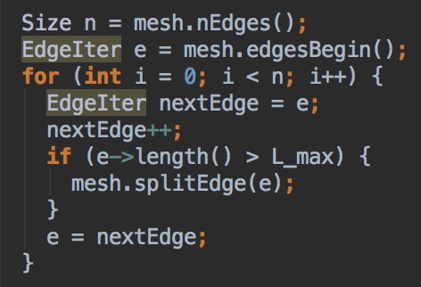
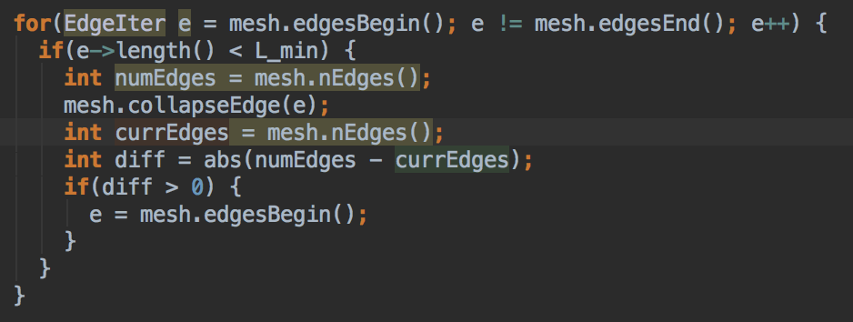

|
|
|
Our project is about downsampling and remeshing triangle meshes. The goal for downsampling is to reduce the number of triangles used to represent the shape of the mesh. The main difficulty is reducing the triangles, which is done with edge collapse. Edge collapse is then used in Quadric Error Metric downsampling.
The goal for isotropic remeshing is finding a better, discrete representation of a mesh with triangles of equal edge length. The main difficulty is adjusting edge lengths which is done by calculating new positions for vertices.
This algorithm is arguably the most cruicial function for the project, utilized in both mesh downsampling and remeshing. What edge collapse does is take a selected edge, and gets rid of it as well as merge the two vertices. Our algorithm is as follows:
we implemented incremental remeshing to create a more topologically accurate and regular mesh. We did this through enforcing a more regular edge length, improving mesh valence, and centering vertices. For this algorithm, we referenced this lecture from CMU Slides
The first part of this algorithm, we specified a length L to be the average length of all of the current edges in the mesh. Then, we defined values L_max = 4/3 * L and L_min = 4/5 * L. Then, using L_max, we split all edges longer than l_max, ensuring no edges would be too long, and we collapsed any edges that were less than L_min
|   |
Enforcing edge lengths resulted in the following change from the original mesh

|
The next major portion of this algorithm was enforcing optimal valence of the vertices, in other words, we made sure that most of the edges in the mesh had no vertex with more or less than 6 incident edges. To do this, we iterated through all of the edges in the mesh. For each edge, we first collected all of the vertices that would be involved in the flipping of the current edge, A, B, C, and D:

|
Then, using these vertices we used the following formula to compute the total error in the valence of the vertices involved with the edge flip:

|
Then, with a slightly edited version of this same formula, we calculated the valence error of these vertices if we were to flip the current edge. If the predicted valence error was less than the current valence error, we flipped the edge.

|
Enforcing an average edge length between average edge length resulted in the following change from the previous result:
The final portion of this algorithm was local spring relaxation, or more simply, moving vertices towards the centroid of their respective polygons. We did this by first calculating the centroid for each vertex, using the average position of its incident vertices:
Next, after computing the centroid of each vertex in the mesh, we iterated through the vertices of the mesh and using the vertex normal and centroid, created a difference vector with which to transform the current position of the vertex, but we multiply this vector by 4/5 in order to reduce the total distance of position change to preserve topology and reduce errors.

|
this final computation resulted in the following improvement to the mesh:

|
And finally, a comparision of the final result to the original mesh:

|
bad
bad
bad
Click here for results gallery